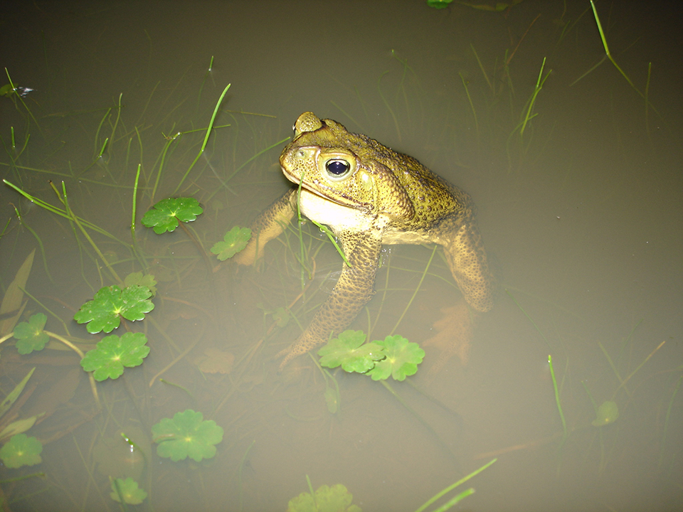
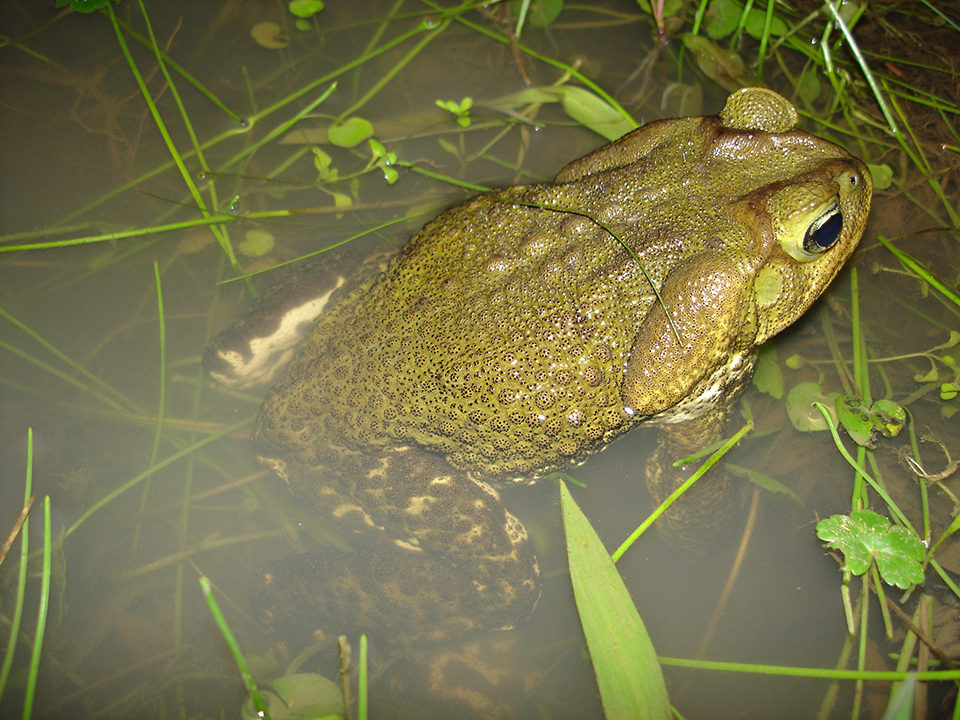
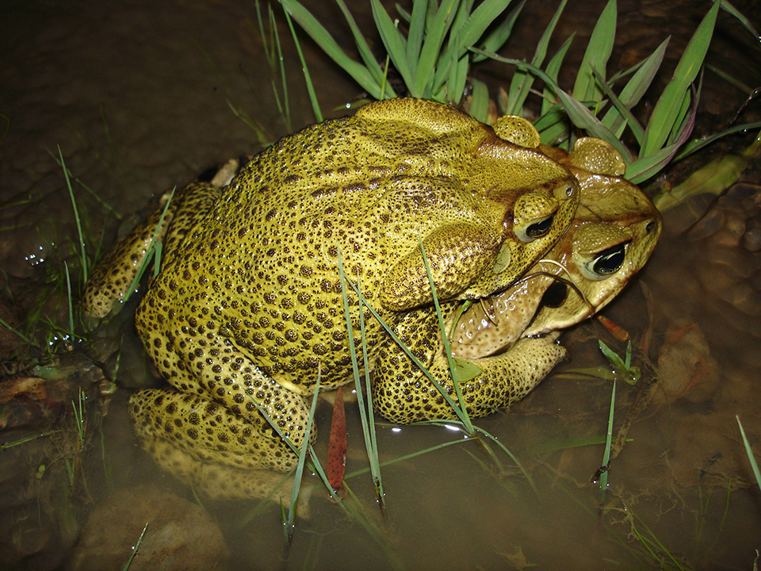
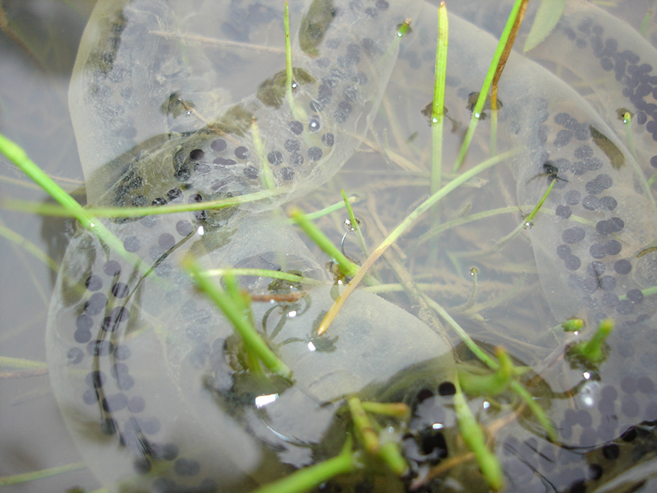

Espécie de grande porte, terrestre, ocorre tanto em áreas abertas quanto florestadas aonde vocaliza associado a lagos, poças e riachos. Sua pele é verrugosa, varia de marrom claro a amarelo esverdeado, pode ter manchas marrom escuro por todo o corpo. Tem grandes glândulas paratóides na cabeça onde produz veneno que é liberado quando a glândula é comprimida.
Registrado nos estados do RS, SC, PR, SP, MG e RJ. Alimenta-se principalmente de besouros e formigas.
   